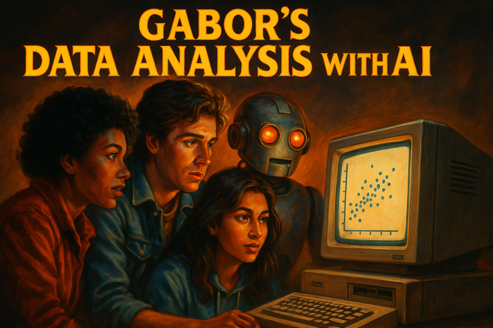

Doing Data Analysis with AI
A short course

What’s this
This course will equip students, who are already versed in core data analysis methods, with experience to harness AI technologies to improve productivity (yes this is classic LLM sentence). But, yeah, the idea is to help students who studied data analysis / econometrics / quant methods and want to think about how to include AI in their analytics routine, and spend time to share experiences.
As AI becomes more and more powerful, it is also important to provide a platform to discuss human agency in data analysis. So a key element of the course and its instructor to lead discussions on the role of AI and humans in various aspects of data analysis.
This is the 2025 Spring edition, 1.0 release
For whom?
This material is aimed at data science and analytics instructors who can guide their students through the material sharing the experience and domain specific examples. All of this is open source, may be modified (see rights below).
But, dear reader (students, practitioners, researchers, journalists and more), you can also go alone, checking ideas and practice sessions.
AI and me
At the end of all classes, instructors and students should always consider these three questions.
- How did AI support me do what I planned.
- How did AI fail me: gave half-truths, buggy code, imprecise arguments
- How did AI extend me: helped do things I could not, or gave new ideas
Course description
Content
The course focuses on using large language models (LLMs) such as OpenAI’s ChatGPT, Anthropic Claude.ai, Mistral’s Le Chat, and Google’s Gemini) to carry out tasks in data analysis. It includes topics like data extraction and wrangling, data exploration and descriptive statistics, and creating reports as well as turning text to data.
There are three case studies that we use (1) a simulated set of data tables on hotels in Austria, (2) The World Value Survey, and (3) A series of interview textst.
The course material includes weekly practice assignments.
Background: data analysis / econometrics
You need a background in Data Analysis / Econometrics, a good introductory course is enough. I, of course, suggest Chapters 1-12 and 19 of Data Analysis for Business, Economics and Policy (Cambridge UP, 2021). Full slideshows, data and code are open source. But consider buying the book!🤝
In particular, the course builds on Chapters 1-6 and 7-10, and 19 of Data Analysis but other Introductory Econometrics + basics of data science knowledge is ok.
Background: coding
Students are expected to have some basic coding knowledge in Python or R (Stata also fine mostly).
Relevance
AI is everywhere and has become essential, most analytic work will be using it. It’s like the Internet a while back. Does not solve all problems, but almost all intellectual tasks will rely on inputs from it.
Learning Outcomes
Key outcomes. By the end of the course, students will be able to
- Gain experience and confidence using genAI to carry out key tasks in data analysis.
- Build AI in coding practice including data wrangling, description and reporting and text analysis
- Have some idea of use cases when AI assistance is (1) greatly useful, (2) helpful, (3) currently problematic.
- Have some idea of use cases when AI assistance is OK to use as is vs needs strong human supervision
- Have an understanding of resources to follow for updates.
Target audience
This is a course aimed at 3rd (2nd?) year BA and MA students in any program with required background. Economics, Quantitative Social science, Political Science, Sociology, History. To be frank, all students shall learn data analysis and be comfortable using AI.
But, anyone can use it with adequate background.
Course Context & Trajectory
What’s Coming Next:
- Week 0: Using AI for Coding – this may not be part of the curriculum
- Week 1: LLM Review and short task to recrate a graph
- Week 2: Use AI to understand and document the World Values Survey dataset
- Week 3: AI-assisted report writing with WVS data
- Week 4: Multi-table joins with Austrian hotel data
- Weeks 5-6: Text analysis of football manager interviews
- Week 7: Developing dashboards
- Week 7: AI as applied metrics consultant
Skills Development Arc:
- Weeks 0: Background prep: Writing code with AI
- Weeks 1-2: Foundation (AI concepts, data exploration)
- Weeks 3-4: Core analysis (reporting, data wrangling)
- Weeks 5-6: Advanced applications (text analysis, APIs)
- Weeks 5-6: Helping research and presentation
Assignments
Assignments are available for all classes
Important to note for assignments: * Use AI but do not submit something that was created by AI. AI is your assistant. * One of the goals of the course is to practice this.
Detailed overview
Week00: AI for coding
Using AI for code. May not be covered in this class, as it had often been already covered in coding classes.
Week01: LLM Review
What are LLMs, how is the magic happening. A non-technical brief intro. How to work with LLMs? Plus ideas on applications. Includes suggested readings, podcasts, and vids to listen to.
Which AI?
See my take on current models. As of May 2025.
Week02: Data and code discovery and documentation with AI
Learn how to write a clear and professional code and data documentation. LLMs are great help once you know the basics.
Case study: World Values Survey. Data is at WVS
Week 03: Writing Reports
You have your data and task, and need to write a short report. We compare different options with LLM, from one-shot prompt to iteration.
Case study: World Values Survey. Data is at WVS
Week04: Data wrangling, joining tables
Joining data tables is maybe the most basic yet rather complicated part of data wrangling.
Case study: simulated Austrian hotels. Data is at hotels
Week05: Text as data 1 – intro lecture
No course of mine can escape football (soccer). Here we look at post-game interviews to learn basics of text analysis and apply LLMs in what they are best - context dependent learning. Two class series. First is more intro to natural language processing.
Case study: football post-game interviews. Data is at interviews
Week06: Text as data 2 – practice
Second class, now we are in action. How does LLM compare to humans?
Case study: football post-game interviews. Data is at interviews
Week07: Creating simulations with apps and dashboards
TBA
Week08: AI as research companion
TBA
Learn more
I’m adding material to learn-more folder. You can start with the beyond page.
Rights and acknowledgement
You can use it to teach and learn freely
Attribution: Békés, Gábor: “Doing Data Analysis with AI: a short course”, available at github.com/gabors-data-analysis/da-w-ai/, v0.5, 2025-05-14
License: CC BY-NC-SA 4.0 – share, attribute, non-commercial (contact me for corporate gigs)
Textbook Please check out the textbook behind all this, buy it if you can. If interested teaching contact the Cambridge UP or me.
Thanks
Thanks: Developed mostly by me, Gábor Békés Thanks a million to the two wonderful human RAs, Ms Zsuzsanna Vadle and Mr Kenneth Colombe, both Phd students. Thanks to Claude.ai that did a great deal of help in creating the simulated dataset. ChatGPT and Claude.ai helped create the slideshows and educated me on NLP. This is a beatiful example of collaboration with great young people while heavily benefiting from advanced AI.
Thanks for CEU’s teaching grant that allowed me pay people and AI.
Questions and suggestions
This material is based my course at CEU in Vienna, Austria.
If you have questions or suggestions or interested to learn more, just fill in this form.
And now, this.
AI use is very costly in terms of energy. Yes, it is becoming cheaper. But humanity is also using much more of it.